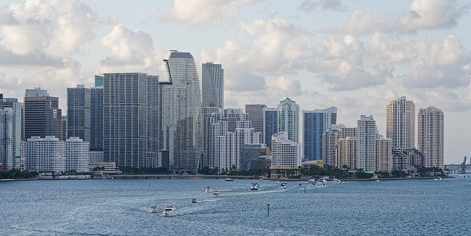
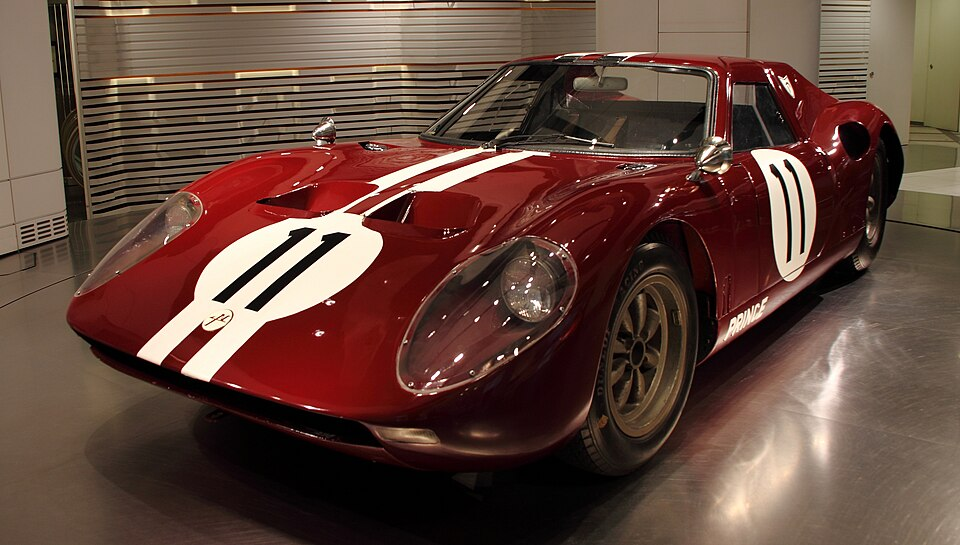
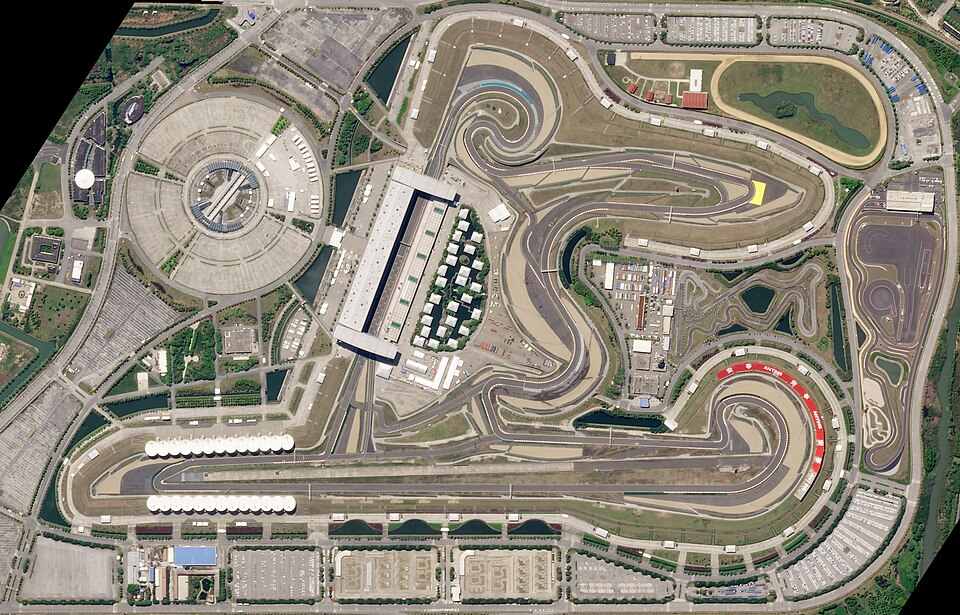

Semana de GP
 GP de Las Vegas
Neón violeta en el Strip
Faltan 5 días
GP de Las Vegas
Neón violeta en el Strip
Faltan 5 días


Once escuderías y sus historias, la parrilla entera, los 23 circuitos y la actualidad del paddock. Todo verificado y actualizado solo, en cada carrera.
Las últimas carreras disputadas, con su podio y el escenario donde ocurrieron.

Mercedes · Circuit Gilles Villeneuve

Mercedes · Miami International Autodrome

Mercedes · Suzuka Circuit

Mercedes · Shanghai International Circuit
Puntos por escudería tras la ronda 20. Cada barra, un equipo; cada color, su identidad.
Cada ficha tiene su propia puesta en escena: la de Maranello se lee como un museo, la de Brackley como una sala de datos.
Coches, caras y escenarios. Todo lo que hay en esta página sale de datos e imágenes públicas y se regenera en cada carrera.


Titulares de los medios especializados, recolectados automáticamente en cada publicación.